Basic FULMAR usage. Using K2-109 as an example¶
This system contains two known exoplanets. For more information, have a look at Barros et al. 2017
Let’s start by importing common modules
[1]:
import fulmar
import numpy as np
import matplotlib.pyplot as plt
import astropy.units as u
from transitleastsquares import transit_mask
WARNING (theano.tensor.blas): Using NumPy C-API based implementation for BLAS functions.
Define target¶
[2]:
lc_targ = fulmar.target('K2-109') # aka. HD 106315
WARNING: UnitsWarning: Unit 'Rsun' not supported by the VOUnit standard. [astropy.units.format.vounit]
WARNING: UnitsWarning: Unit 'Msun' not supported by the VOUnit standard. [astropy.units.format.vounit]
Update stellar parameters if necessary¶
[3]:
# K2-109 parameters from Barros et al. 2017 (https://www.aanda.org/articles/aa/pdf/2017/12/aa31276-17.pdf)
lc_targ.R_star = 1.296
lc_targ.R_star_max = 0.058
lc_targ.R_star_min = 0.058
lc_targ.M_star = 1.091
lc_targ.M_star_max = 0.036
lc_targ.M_star_min = 0.036
Build the lightcurve¶
[4]:
lc_targ.build_lightcurve(author='EVEREST')
Searching for lightcurves
Warning: 25% (851/3384) of the cadences will be ignored due to the quality mask (quality_bitmask=1130799).
Warning: 25% (851/3384) of the cadences will be ignored due to the quality mask (quality_bitmask=1130799).
['K2 Campaign 102']
1 Lightcurves found
Downloading Lightcurves
[4]:
TimeSeries length=2533
| time | flux | flux_err | cadn | fraw | cadenceno | fraw_err | quality | fcor | cbv01 | cbv02 | cbv03 | cbv04 | cbv05 | cbv06 | exptime |
|---|---|---|---|---|---|---|---|---|---|---|---|---|---|---|---|
| electron / s | electron / s | electron / s | s | ||||||||||||
| Time | float64 | float64 | float64 | float64 | float64 | float64 | int32 | float64 | float64 | float64 | float64 | float64 | float64 | float64 | float64 |
| 2749.5899533941338 | 0.9919362273818925 | nan | 129231.0 | 3616934.469760895 | 129231.0 | 47.413345756122425 | 524288 | 3618895.8239213014 | 1.0 | 4.032601813062183 | 3.721325487340294 | -0.6272998722503135 | 2.7580352239694506 | 0.9449693607767682 | 1800.0 |
| 2749.6103854284593 | 0.9919057528017547 | nan | 129232.0 | 3616898.694656372 | 129232.0 | 47.4206060553783 | 0 | 3618797.79577493 | 1.0 | 4.036445303100602 | 3.709970058424757 | -0.639482652969744 | 2.7337745018705517 | 0.9413711769034284 | 1800.0 |
| 2749.6308173623256 | 0.9920318018415252 | nan | 129233.0 | 3617448.0032958984 | 129233.0 | 47.43482627636655 | 0 | 3619268.647123106 | 1.0 | 4.040263871939855 | 3.698637940508874 | -0.6516019999249221 | 2.7095909556591535 | 0.9377823016121527 | 1800.0 |
| 2749.6512491959584 | 0.9919802015869569 | nan | 129234.0 | 3617286.1815719604 | 129234.0 | 47.44625835297297 | 0 | 3619093.66213457 | 1.0 | 4.044057555765272 | 3.687329095681801 | -0.6636580207756357 | 2.685484485807006 | 0.9342027182885964 | 1800.0 |
| 2749.6716812293525 | 0.992301349055998 | nan | 129235.0 | 3618496.683452606 | 129235.0 | 47.469152065594365 | 0 | 3620273.5298203984 | 1.0 | 4.047826390762182 | 3.676043486032692 | -0.6756508231816731 | 2.6614549927858597 | 0.930632410318415 | 1800.0 |
| 2749.6921131622876 | 0.9923487483914822 | nan | 129236.0 | 3618750.0302505493 | 129236.0 | 47.48211093867445 | 0 | 3620458.2428743644 | 1.0 | 4.051570413115917 | 3.664781073650703 | -0.6875805148028225 | 2.6375023770674657 | 0.9270713610872642 | 1800.0 |
| 2749.712544994756 | 0.9923954335698577 | nan | 129237.0 | 3618955.9937667847 | 129237.0 | 47.49448540389917 | 0 | 3620640.277803066 | 1.0 | 4.055289659011805 | 3.6535418206249886 | -0.6994472032988717 | 2.613626539123574 | 0.9235195539807992 | 1800.0 |
| 2749.732977027219 | 0.9925266324082855 | nan | 129238.0 | 3619466.253112793 | 129238.0 | 47.507834395667736 | 0 | 3621129.43718082 | 1.0 | 4.058984164635178 | 3.642325689044705 | -0.7112509963296089 | 2.589827379425935 | 0.9199769723846757 | 1800.0 |
| 2749.75340895899 | 0.9925245517214502 | nan | 129239.0 | 3619449.8608169556 | 129239.0 | 47.52051862733021 | 0 | 3621134.0445883283 | 1.0 | 4.062653966171363 | 3.6311326409990063 | -0.7229920015548223 | 2.5661047984463004 | 0.916443599684549 | 1800.0 |
| 2749.77384079076 | 0.992604148341398 | nan | 129240.0 | 3619830.804801941 | 129240.0 | 47.54148128608888 | 0 | 3621435.4665627684 | 1.0 | 4.0662990998056925 | 3.6199626385770487 | -0.7346703266342999 | 2.5424586966564195 | 0.9129194192660746 | 1800.0 |
| 2749.7942728220587 | 0.9925338870317024 | nan | 129241.0 | 3619638.970149994 | 129241.0 | 47.56157806813444 | 0 | 3621192.074435645 | 1.0 | 4.0699196017234955 | 3.6088156438679864 | -0.7462860792278299 | 2.5188889745280436 | 0.909404414514908 | 1800.0 |
| 2749.8147047528983 | 0.9926073018860605 | nan | 129242.0 | 3620092.708744049 | 129242.0 | 47.5904070351304 | 0 | 3621470.8624807484 | 1.0 | 4.073515508110102 | 3.5976916189609756 | -0.7578393669952004 | 2.4953955325329225 | 0.9058985688167047 | 1800.0 |
| 2749.835136583737 | 0.9926726508159865 | nan | 129243.0 | 3620588.7246055603 | 129243.0 | 47.61261592531867 | 4202496 | 3621720.249503433 | 1.0 | 4.077086855150842 | 3.5865905259451702 | -0.7693302975961993 | 2.4719782711428078 | 0.9024018655571202 | 1800.0 |
| 2749.8555686138716 | 0.9928366016424158 | nan | 129244.0 | 3621590.49723053 | 129244.0 | 47.63446913691414 | 0 | 3622327.9723254293 | 1.0 | 4.080633679031045 | 3.5755123269097266 | -0.780758978690615 | 2.448637090829449 | 0.89891428812181 | 1800.0 |
| ... | ... | ... | ... | ... | ... | ... | ... | ... | ... | ... | ... | ... | ... | ... | ... |
| 2818.404101452441 | 1.0005970765947736 | nan | 132599.0 | 3633293.7000579834 | 132599.0 | 47.82186261899401 | 0 | 3629823.601130887 | 1.0 | -2.165105135304227 | 0.3430441145492126 | 3.4383054244120492 | 0.18877366699696385 | 3.5361133038974453 | 1800.0 |
| 2818.42453350703 | 1.0005313477783007 | nan | 132600.0 | 3633612.672267914 | 132600.0 | 47.82432371418381 | 0 | 3629576.2479759958 | 1.0 | -2.1676468393414416 | 0.35742741915056153 | 3.476059368846186 | 0.1878292816114223 | 3.564769882023916 | 1800.0 |
| 2818.444965362083 | 1.0004984893450761 | nan | 132601.0 | 3633727.3173980713 | 132601.0 | 47.82989274571733 | 0 | 3629448.307331349 | 1.0 | -2.170209975347164 | 0.3719028565778023 | 3.5139713582739436 | 0.18687824843660028 | 3.593565810923214 | 1800.0 |
| 2818.4653973173627 | 1.0005727916549771 | nan | 132602.0 | 3634014.084197998 | 132602.0 | 47.8402087450808 | 0 | 3629709.8239144934 | 1.0 | -2.1727945928832346 | 0.3864706142277389 | 3.5520416674443522 | 0.18592055324433898 | 3.622501389120891 | 1800.0 |
| 2818.485829373116 | 1.000549754409066 | nan | 132603.0 | 3633582.8075580597 | 132603.0 | 47.849561180741254 | 0 | 3629617.440560636 | 1.0 | -2.1754007415114867 | 0.4011308794971751 | 3.5902705711064433 | 0.18495618180647985 | 3.6515769151425177 | 1800.0 |
| 2818.5062612291003 | 1.0006123790751411 | nan | 132604.0 | 3633667.8337860107 | 132604.0 | 47.862669053550725 | 0 | 3629836.3660213975 | 1.0 | -2.178028470793757 | 0.4158838397829151 | 3.6286583440092626 | 0.18398511989486274 | 3.6807926875136756 | 1800.0 |
| 2818.5266932855448 | 1.000732636547247 | nan | 132605.0 | 3633621.2506580353 | 132605.0 | 47.88206381294157 | 0 | 3630264.714549671 | 1.0 | -2.180677830291881 | 0.4307296824817629 | 3.6672052609018317 | 0.18300735328132892 | 3.7101490047599226 | 1800.0 |
| 2818.5675570991443 | 1.0006485538181358 | nan | 132607.0 | 3633000.380264282 | 132607.0 | 47.92869043255829 | 0 | 3629941.2857178226 | 1.0 | -2.1860416381830308 | 0.460700764705989 | 3.7447776256523984 | 0.18103164903587343 | 3.7692844679799906 | 1800.0 |
| 2818.587989156753 | 1.0005698599427024 | nan | 132608.0 | 3632872.1142292023 | 132608.0 | 47.89915853872955 | 0 | 3629646.2314486075 | 1.0 | -2.1887561856997317 | 0.4758263790249837 | 3.7838036230084517 | 0.18003368294763394 | 3.799064211004942 | 1800.0 |
| 2818.608421114368 | 1.0006106855242058 | nan | 132609.0 | 3632842.7295036316 | 132609.0 | 47.85585436947139 | 0 | 3629785.557085446 | 1.0 | -2.1914925616796306 | 0.4910456253443005 | 3.8229898633504096 | 0.1790289552448402 | 3.8289856930072714 | 1800.0 |
| 2818.6288530724487 | 1.0006010795024947 | nan | 132610.0 | 3632803.993894577 | 132610.0 | 47.8376854875877 | 0 | 3629741.491678547 | 1.0 | -2.1942508156845624 | 0.5063586910607467 | 3.8623366214273016 | 0.1780174516993333 | 3.8590492125125495 | 1800.0 |
| 2818.649285030988 | 1.0007452818397116 | nan | 132611.0 | 3633366.8895816803 | 132611.0 | 47.833337824186906 | 0 | 3630256.445741738 | 1.0 | -2.1970309972763635 | 0.5217657635711228 | 3.901844171988155 | 0.17699915808295472 | 3.8892550680463343 | 1800.0 |
| 2818.669716989767 | 1.0006993653052811 | nan | 132612.0 | 3633311.242116928 | 132612.0 | 47.82951294055048 | 0 | 3630080.2462951913 | 1.0 | -2.1998331560168713 | 0.5372670302722362 | 3.9415127897820197 | 0.17597406016754435 | 3.9196035581342104 | 1800.0 |
| 2818.690148948779 | 1.0005968151050437 | nan | 132613.0 | 3633454.115245819 | 132613.0 | 47.827956983168555 | 0 | 3629698.1108623846 | 1.0 | -2.2026573414679183 | 0.5528626785608874 | 3.9813427495579212 | 0.1749421437249436 | 3.9500949813017323 | 1800.0 |
| 2818.7105809082495 | 1.0005499870390169 | nan | 132614.0 | 3633572.709289551 | 132614.0 | 47.82878398536017 | 524288 | 3629518.451740521 | 1.0 | -2.2055036031913446 | 0.5685528958338841 | 4.021334326064893 | 0.1739033945269926 | 3.980729636074492 | 1800.0 |
Alternatively, build the lightcurve from files, for example data reduced with POLAR¶
[ ]:
filelist = [your_files_here]
[ ]:
lc_targ.build_lightcurve(filelist=filelist, author='AUTHOR')
Plot the light curve for a quick visualisation¶
[5]:
plt.plot(lc_targ.ts_stitch.time.value, lc_targ.ts_stitch['flux'],'k.', markersize=1.8, alpha = 0.25)
plt.xlabel('Time [{}]'.format(str(lc_targ.ts_stitch.time.format).upper()))
plt.ylabel('Flux')
plt.title(lc_targ.K2 + ' Lightcurve')
# plt.xlim(2350,2356)
# plt.ylim(0.9985,1.0015)
plt.show()
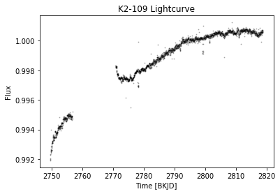
Mask Outliers¶
[6]:
m1 = lc_targ.mask_outliers(sigma=4)
Plot the light curve with outliers highlighted¶
[7]:
plt.plot(lc_targ.ts_stitch.time.value, lc_targ.ts_stitch['flux'],'k.', markersize=1.8, alpha = 0.25)
plt.plot(lc_targ.ts_stitch.time.value[~m1], lc_targ.ts_stitch['flux'][~m1],'o', color='xkcd:orange', markersize=8, alpha = 0.5)
plt.xlabel('Time [{}]'.format(str(lc_targ.ts_stitch.time.format).upper()))
plt.ylabel('Flux')
# plt.xlim(2350,2356)
# plt.ylim(0.985,1.015)
plt.show()
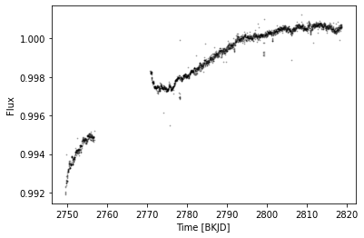
Remove the outliers if necessary.¶
[11]:
lc_targ.ts_stitch = lc_targ.ts_stitch[m1]
Clean the light curve / correct activity¶
Using a Savistzky-Golay filter:¶
[9]:
lc_targ.clean_subt_activity_flatten(sigma=3,
wl=37,
time_window=18*u.h,
polyorder=2,
return_trend=False,
remove_outliers=True,
break_tolerance=5,
niters=3,
mask=None)
# You might face issues with Astropy >= 5.0 where flatten gives TypeError: "cannot write to unmasked output"
# The issue comes from Lightkurve and a pull request has been made: https://github.com/lightkurve/lightkurve/pull/1162/commits/05034f4bbd8e6a40f8efd9cfa1f108a36ddc0872
[9]:
TimeSeries length=2476
| time | flux | flux_err | cadn | fraw | cadenceno | fraw_err | quality | fcor | cbv01 | cbv02 | cbv03 | cbv04 | cbv05 | cbv06 | exptime |
|---|---|---|---|---|---|---|---|---|---|---|---|---|---|---|---|
| electron / s | electron / s | electron / s | s | ||||||||||||
| Time | float64 | float64 | float64 | float64 | float64 | float64 | int32 | float64 | float64 | float64 | float64 | float64 | float64 | float64 | float64 |
| 2749.5899533941338 | 0.9974494072046971 | nan | 129231.0 | 3616934.469760895 | 129231.0 | 47.413345756122425 | 524288 | 3618895.8239213014 | 1.0 | 4.032601813062183 | 3.721325487340294 | -0.6272998722503135 | 2.7580352239694506 | 0.9449693607767682 | 1800.0 |
| 2749.6103854284593 | 0.9974552745389408 | nan | 129232.0 | 3616898.694656372 | 129232.0 | 47.4206060553783 | 0 | 3618797.79577493 | 1.0 | 4.036445303100602 | 3.709970058424757 | -0.639482652969744 | 2.7337745018705517 | 0.9413711769034284 | 1800.0 |
| 2749.6308173623256 | 0.9976185472245636 | nan | 129233.0 | 3617448.0032958984 | 129233.0 | 47.43482627636655 | 0 | 3619268.647123106 | 1.0 | 4.040263871939855 | 3.698637940508874 | -0.6516019999249221 | 2.7095909556591535 | 0.9377823016121527 | 1800.0 |
| 2749.6512491959584 | 0.997603175397708 | nan | 129234.0 | 3617286.1815719604 | 129234.0 | 47.44625835297297 | 0 | 3619093.66213457 | 1.0 | 4.044057555765272 | 3.687329095681801 | -0.6636580207756357 | 2.685484485807006 | 0.9342027182885964 | 1800.0 |
| 2749.6716812293525 | 0.9979626771452772 | nan | 129235.0 | 3618496.683452606 | 129235.0 | 47.469152065594365 | 0 | 3620273.5298203984 | 1.0 | 4.047826390762182 | 3.676043486032692 | -0.6756508231816731 | 2.6614549927858597 | 0.930632410318415 | 1800.0 |
| 2749.6921131622876 | 0.9980468850219955 | nan | 129236.0 | 3618750.0302505493 | 129236.0 | 47.48211093867445 | 0 | 3620458.2428743644 | 1.0 | 4.051570413115917 | 3.664781073650703 | -0.6875805148028225 | 2.6375023770674657 | 0.9270713610872642 | 1800.0 |
| 2749.712544994756 | 0.9981303806009645 | nan | 129237.0 | 3618955.9937667847 | 129237.0 | 47.49448540389917 | 0 | 3620640.277803066 | 1.0 | 4.055289659011805 | 3.6535418206249886 | -0.6994472032988717 | 2.613626539123574 | 0.9235195539807992 | 1800.0 |
| 2749.732977027219 | 0.9982988878195049 | nan | 129238.0 | 3619466.253112793 | 129238.0 | 47.507834395667736 | 0 | 3621129.43718082 | 1.0 | 4.058984164635178 | 3.642325689044705 | -0.7112509963296089 | 2.589827379425935 | 0.9199769723846757 | 1800.0 |
| 2749.75340895899 | 0.9983333476478541 | nan | 129239.0 | 3619449.8608169556 | 129239.0 | 47.52051862733021 | 0 | 3621134.0445883283 | 1.0 | 4.062653966171363 | 3.6311326409990063 | -0.7229920015548223 | 2.5661047984463004 | 0.916443599684549 | 1800.0 |
| 2749.77384079076 | 0.9984499681560839 | nan | 129240.0 | 3619830.804801941 | 129240.0 | 47.54148128608888 | 0 | 3621435.4665627684 | 1.0 | 4.0662990998056925 | 3.6199626385770487 | -0.7346703266342999 | 2.5424586966564195 | 0.9129194192660746 | 1800.0 |
| 2749.7942728220587 | 0.9984158515428457 | nan | 129241.0 | 3619638.970149994 | 129241.0 | 47.56157806813444 | 0 | 3621192.074435645 | 1.0 | 4.0699196017234955 | 3.6088156438679864 | -0.7462860792278299 | 2.5188889745280436 | 0.909404414514908 | 1800.0 |
| 2749.8147047528983 | 0.9985262651628759 | nan | 129242.0 | 3620092.708744049 | 129242.0 | 47.5904070351304 | 0 | 3621470.8624807484 | 1.0 | 4.073515508110102 | 3.5976916189609756 | -0.7578393669952004 | 2.4953955325329225 | 0.9058985688167047 | 1800.0 |
| 2749.835136583737 | 0.9986285723716373 | nan | 129243.0 | 3620588.7246055603 | 129243.0 | 47.61261592531867 | 4202496 | 3621720.249503433 | 1.0 | 4.077086855150842 | 3.5865905259451702 | -0.7693302975961993 | 2.4719782711428078 | 0.9024018655571202 | 1800.0 |
| 2749.8555686138716 | 0.9988300845596197 | nan | 129244.0 | 3621590.49723053 | 129244.0 | 47.63446913691414 | 0 | 3622327.9723254293 | 1.0 | 4.080633679031045 | 3.5755123269097266 | -0.780758978690615 | 2.448637090829449 | 0.89891428812181 | 1800.0 |
| ... | ... | ... | ... | ... | ... | ... | ... | ... | ... | ... | ... | ... | ... | ... | ... |
| 2818.404101452441 | 0.9999724442966103 | nan | 132599.0 | 3633293.7000579834 | 132599.0 | 47.82186261899401 | 0 | 3629823.601130887 | 1.0 | -2.165105135304227 | 0.3430441145492126 | 3.4383054244120492 | 0.18877366699696385 | 3.5361133038974453 | 1800.0 |
| 2818.42453350703 | 0.9999040570091818 | nan | 132600.0 | 3633612.672267914 | 132600.0 | 47.82432371418381 | 0 | 3629576.2479759958 | 1.0 | -2.1676468393414416 | 0.35742741915056153 | 3.476059368846186 | 0.1878292816114223 | 3.564769882023916 | 1800.0 |
| 2818.444965362083 | 0.9998691434778788 | nan | 132601.0 | 3633727.3173980713 | 132601.0 | 47.82989274571733 | 0 | 3629448.307331349 | 1.0 | -2.170209975347164 | 0.3719028565778023 | 3.5139713582739436 | 0.18687824843660028 | 3.593565810923214 | 1800.0 |
| 2818.4653973173627 | 0.999941946949921 | nan | 132602.0 | 3634014.084197998 | 132602.0 | 47.8402087450808 | 0 | 3629709.8239144934 | 1.0 | -2.1727945928832346 | 0.3864706142277389 | 3.5520416674443522 | 0.18592055324433898 | 3.622501389120891 | 1800.0 |
| 2818.485829373116 | 0.9999180958967169 | nan | 132603.0 | 3633582.8075580597 | 132603.0 | 47.849561180741254 | 0 | 3629617.440560636 | 1.0 | -2.1754007415114867 | 0.4011308794971751 | 3.5902705711064433 | 0.18495618180647985 | 3.6515769151425177 | 1800.0 |
| 2818.5062612291003 | 0.9999804764132937 | nan | 132604.0 | 3633667.8337860107 | 132604.0 | 47.862669053550725 | 0 | 3629836.3660213975 | 1.0 | -2.178028470793757 | 0.4158838397829151 | 3.6286583440092626 | 0.18398511989486274 | 3.6807926875136756 | 1800.0 |
| 2818.5266932855448 | 1.0001010771465841 | nan | 132605.0 | 3633621.2506580353 | 132605.0 | 47.88206381294157 | 0 | 3630264.714549671 | 1.0 | -2.180677830291881 | 0.4307296824817629 | 3.6672052609018317 | 0.18300735328132892 | 3.7101490047599226 | 1800.0 |
| 2818.5675570991443 | 1.0000180904455735 | nan | 132607.0 | 3633000.380264282 | 132607.0 | 47.92869043255829 | 0 | 3629941.2857178226 | 1.0 | -2.1860416381830308 | 0.460700764705989 | 3.7447776256523984 | 0.18103164903587343 | 3.7692844679799906 | 1800.0 |
| 2818.587989156753 | 0.9999411127814223 | nan | 132608.0 | 3632872.1142292023 | 132608.0 | 47.89915853872955 | 0 | 3629646.2314486075 | 1.0 | -2.1887561856997317 | 0.4758263790249837 | 3.7838036230084517 | 0.18003368294763394 | 3.799064211004942 | 1800.0 |
| 2818.608421114368 | 0.9999842031862137 | nan | 132609.0 | 3632842.7295036316 | 132609.0 | 47.85585436947139 | 0 | 3629785.557085446 | 1.0 | -2.1914925616796306 | 0.4910456253443005 | 3.8229898633504096 | 0.1790289552448402 | 3.8289856930072714 | 1800.0 |
| 2818.6288530724487 | 0.9999775174168674 | nan | 132610.0 | 3632803.993894577 | 132610.0 | 47.8376854875877 | 0 | 3629741.491678547 | 1.0 | -2.1942508156845624 | 0.5063586910607467 | 3.8623366214273016 | 0.1780174516993333 | 3.8590492125125495 | 1800.0 |
| 2818.649285030988 | 1.0001251684302048 | nan | 132611.0 | 3633366.8895816803 | 132611.0 | 47.833337824186906 | 0 | 3630256.445741738 | 1.0 | -2.1970309972763635 | 0.5217657635711228 | 3.901844171988155 | 0.17699915808295472 | 3.8892550680463343 | 1800.0 |
| 2818.669716989767 | 1.0000834425946967 | nan | 132612.0 | 3633311.242116928 | 132612.0 | 47.82951294055048 | 0 | 3630080.2462951913 | 1.0 | -2.1998331560168713 | 0.5372670302722362 | 3.9415127897820197 | 0.17597406016754435 | 3.9196035581342104 | 1800.0 |
| 2818.690148948779 | 0.999985741152896 | nan | 132613.0 | 3633454.115245819 | 132613.0 | 47.827956983168555 | 0 | 3629698.1108623846 | 1.0 | -2.2026573414679183 | 0.5528626785608874 | 3.9813427495579212 | 0.1749421437249436 | 3.9500949813017323 | 1800.0 |
| 2818.7105809082495 | 0.9999443509089974 | nan | 132614.0 | 3633572.709289551 | 132614.0 | 47.82878398536017 | 524288 | 3629518.451740521 | 1.0 | -2.2055036031913446 | 0.5685528958338841 | 4.021334326064893 | 0.1739033945269926 | 3.980729636074492 | 1800.0 |
Alternatively, using GP:¶
[10]:
lc_targ.clean_subt_activity_GP(
timeseries=None,
bin_duration=60 * u.min,
period_min=0.2,
period_max=100.0,
tune=2500,
draws=2500,
chains=2,
target_accept=0.95,
ncores=None,
return_trend=False,
remove_outliers=True,
sigma_out=3,
mask=None)
/home/jrodrigues/fulmar_venv/lib64/python3.9/site-packages/astropy/timeseries/downsample.py:28: RuntimeWarning: Mean of empty slice /home/jrodrigues/fulmar_venv/lib64/python3.9/site-packages/astropy/timeseries/downsample.py:26: RuntimeWarning: Mean of empty slice /home/jrodrigues/fulmar_venv/lib64/python3.9/site-packages/astropy/timeseries/downsample.py:29: RuntimeWarning: Mean of empty slice
guessed period is 24.03185320009876 days
optimizing logp for variables: [f, log_dQ, log_Q0, log_period, sigma_rot, rho, sigma, log_jitter, mean]
100.00% [36/36 00:00<00:00 logp = -2.258e+03]
message: Optimization terminated successfully.
logp: -2793.754777544708 -> -2258.111803771446
Multiprocess sampling (2 chains in 8 jobs)
NUTS: [f, log_dQ, log_Q0, log_period, sigma_rot, rho, sigma, log_jitter, mean]
100.00% [10000/10000 01:57<00:00 Sampling 2 chains, 0 divergences]
Sampling 2 chains for 2_500 tune and 2_500 draw iterations (5_000 + 5_000 draws total) took 118 seconds.
[10]:
TimeSeries length=2480
| time | flux | flux_err | cadn | fraw | cadenceno | fraw_err | quality | fcor | cbv01 | cbv02 | cbv03 | cbv04 | cbv05 | cbv06 | exptime |
|---|---|---|---|---|---|---|---|---|---|---|---|---|---|---|---|
| electron / s | electron / s | electron / s | s | ||||||||||||
| object | float64 | float64 | float64 | float64 | float64 | float64 | int32 | float64 | float64 | float64 | float64 | float64 | float64 | float64 | float64 |
| 2749.5899533941338 | 0.998349433848371 | nan | 129231.0 | 3616934.469760895 | 129231.0 | 47.413345756122425 | 524288 | 3618895.8239213014 | 1.0 | 4.032601813062183 | 3.721325487340294 | -0.6272998722503135 | 2.7580352239694506 | 0.9449693607767682 | 1800.0 |
| 2749.6103854284593 | 0.9983187622396653 | nan | 129232.0 | 3616898.694656372 | 129232.0 | 47.4206060553783 | 0 | 3618797.79577493 | 1.0 | 4.036445303100602 | 3.709970058424757 | -0.639482652969744 | 2.7337745018705517 | 0.9413711769034284 | 1800.0 |
| 2749.6308173623256 | 0.9984457325683745 | nan | 129233.0 | 3617448.0032958984 | 129233.0 | 47.43482627636655 | 0 | 3619268.647123106 | 1.0 | 4.040263871939855 | 3.698637940508874 | -0.6516019999249221 | 2.7095909556591535 | 0.9377823016121527 | 1800.0 |
| 2749.6512491959584 | 0.9983939071581265 | nan | 129234.0 | 3617286.1815719604 | 129234.0 | 47.44625835297297 | 0 | 3619093.66213457 | 1.0 | 4.044057555765272 | 3.687329095681801 | -0.6636580207756357 | 2.685484485807006 | 0.9342027182885964 | 1800.0 |
| 2749.6716812293525 | 0.9987166345406551 | nan | 129235.0 | 3618496.683452606 | 129235.0 | 47.469152065594365 | 0 | 3620273.5298203984 | 1.0 | 4.047826390762182 | 3.676043486032692 | -0.6756508231816731 | 2.6614549927858597 | 0.930632410318415 | 1800.0 |
| 2749.6921131622876 | 0.9987638059203047 | nan | 129236.0 | 3618750.0302505493 | 129236.0 | 47.48211093867445 | 0 | 3620458.2428743644 | 1.0 | 4.051570413115917 | 3.664781073650703 | -0.6875805148028225 | 2.6375023770674657 | 0.9270713610872642 | 1800.0 |
| 2749.712544994756 | 0.998809794888955 | nan | 129237.0 | 3618955.9937667847 | 129237.0 | 47.49448540389917 | 0 | 3620640.277803066 | 1.0 | 4.055289659011805 | 3.6535418206249886 | -0.6994472032988717 | 2.613626539123574 | 0.9235195539807992 | 1800.0 |
| 2749.732977027219 | 0.9989407930835639 | nan | 129238.0 | 3619466.253112793 | 129238.0 | 47.507834395667736 | 0 | 3621129.43718082 | 1.0 | 4.058984164635178 | 3.642325689044705 | -0.7112509963296089 | 2.589827379425935 | 0.9199769723846757 | 1800.0 |
| 2749.75340895899 | 0.9989372786791572 | nan | 129239.0 | 3619449.8608169556 | 129239.0 | 47.52051862733021 | 0 | 3621134.0445883283 | 1.0 | 4.062653966171363 | 3.6311326409990063 | -0.7229920015548223 | 2.5661047984463004 | 0.916443599684549 | 1800.0 |
| 2749.77384079076 | 0.9990159099433658 | nan | 129240.0 | 3619830.804801941 | 129240.0 | 47.54148128608888 | 0 | 3621435.4665627684 | 1.0 | 4.0662990998056925 | 3.6199626385770487 | -0.7346703266342999 | 2.5424586966564195 | 0.9129194192660746 | 1800.0 |
| 2749.7942728220587 | 0.998943158158829 | nan | 129241.0 | 3619638.970149994 | 129241.0 | 47.56157806813444 | 0 | 3621192.074435645 | 1.0 | 4.0699196017234955 | 3.6088156438679864 | -0.7462860792278299 | 2.5188889745280436 | 0.909404414514908 | 1800.0 |
| 2749.8147047528983 | 0.9990148906745702 | nan | 129242.0 | 3620092.708744049 | 129242.0 | 47.5904070351304 | 0 | 3621470.8624807484 | 1.0 | 4.073515508110102 | 3.5976916189609756 | -0.7578393669952004 | 2.4953955325329225 | 0.9058985688167047 | 1800.0 |
| 2749.835136583737 | 0.9990779456926332 | nan | 129243.0 | 3620588.7246055603 | 129243.0 | 47.61261592531867 | 4202496 | 3621720.249503433 | 1.0 | 4.077086855150842 | 3.5865905259451702 | -0.7693302975961993 | 2.4719782711428078 | 0.9024018655571202 | 1800.0 |
| 2749.8555686138716 | 0.9992400840159591 | nan | 129244.0 | 3621590.49723053 | 129244.0 | 47.63446913691414 | 0 | 3622327.9723254293 | 1.0 | 4.080633679031045 | 3.5755123269097266 | -0.780758978690615 | 2.448637090829449 | 0.89891428812181 | 1800.0 |
| ... | ... | ... | ... | ... | ... | ... | ... | ... | ... | ... | ... | ... | ... | ... | ... |
| 2818.404101452441 | 0.9997083659963285 | nan | 132599.0 | 3633293.7000579834 | 132599.0 | 47.82186261899401 | 0 | 3629823.601130887 | 1.0 | -2.165105135304227 | 0.3430441145492126 | 3.4383054244120492 | 0.18877366699696385 | 3.5361133038974453 | 1800.0 |
| 2818.42453350703 | 0.9996423445755372 | nan | 132600.0 | 3633612.672267914 | 132600.0 | 47.82432371418381 | 0 | 3629576.2479759958 | 1.0 | -2.1676468393414416 | 0.35742741915056153 | 3.476059368846186 | 0.1878292816114223 | 3.564769882023916 | 1800.0 |
| 2818.444965362083 | 0.9996091702784011 | nan | 132601.0 | 3633727.3173980713 | 132601.0 | 47.82989274571733 | 0 | 3629448.307331349 | 1.0 | -2.170209975347164 | 0.3719028565778023 | 3.5139713582739436 | 0.18687824843660028 | 3.593565810923214 | 1800.0 |
| 2818.4653973173627 | 0.9996831983733262 | nan | 132602.0 | 3634014.084197998 | 132602.0 | 47.8402087450808 | 0 | 3629709.8239144934 | 1.0 | -2.1727945928832346 | 0.3864706142277389 | 3.5520416674443522 | 0.18592055324433898 | 3.622501389120891 | 1800.0 |
| 2818.485829373116 | 0.9996599733968752 | nan | 132603.0 | 3633582.8075580597 | 132603.0 | 47.849561180741254 | 0 | 3629617.440560636 | 1.0 | -2.1754007415114867 | 0.4011308794971751 | 3.5902705711064433 | 0.18495618180647985 | 3.6515769151425177 | 1800.0 |
| 2818.5062612291003 | 0.9997223116728409 | nan | 132604.0 | 3633667.8337860107 | 132604.0 | 47.862669053550725 | 0 | 3629836.3660213975 | 1.0 | -2.178028470793757 | 0.4158838397829151 | 3.6286583440092626 | 0.18398511989486274 | 3.6807926875136756 | 1800.0 |
| 2818.5266932855448 | 0.9998422314448273 | nan | 132605.0 | 3633621.2506580353 | 132605.0 | 47.88206381294157 | 0 | 3630264.714549671 | 1.0 | -2.180677830291881 | 0.4307296824817629 | 3.6672052609018317 | 0.18300735328132892 | 3.7101490047599226 | 1800.0 |
| 2818.5675570991443 | 0.9997582398366757 | nan | 132607.0 | 3633000.380264282 | 132607.0 | 47.92869043255829 | 0 | 3629941.2857178226 | 1.0 | -2.1860416381830308 | 0.460700764705989 | 3.7447776256523984 | 0.18103164903587343 | 3.7692844679799906 | 1800.0 |
| 2818.587989156753 | 0.9996797398181987 | nan | 132608.0 | 3632872.1142292023 | 132608.0 | 47.89915853872955 | 0 | 3629646.2314486075 | 1.0 | -2.1887561856997317 | 0.4758263790249837 | 3.7838036230084517 | 0.18003368294763394 | 3.799064211004942 | 1800.0 |
| 2818.608421114368 | 0.9997206621332078 | nan | 132609.0 | 3632842.7295036316 | 132609.0 | 47.85585436947139 | 0 | 3629785.557085446 | 1.0 | -2.1914925616796306 | 0.4910456253443005 | 3.8229898633504096 | 0.1790289552448402 | 3.8289856930072714 | 1800.0 |
| 2818.6288530724487 | 0.9997112588233211 | nan | 132610.0 | 3632803.993894577 | 132610.0 | 47.8376854875877 | 0 | 3629741.491678547 | 1.0 | -2.1942508156845624 | 0.5063586910607467 | 3.8623366214273016 | 0.1780174516993333 | 3.8590492125125495 | 1800.0 |
| 2818.649285030988 | 0.9998555351226522 | nan | 132611.0 | 3633366.8895816803 | 132611.0 | 47.833337824186906 | 0 | 3630256.445741738 | 1.0 | -2.1970309972763635 | 0.5217657635711228 | 3.901844171988155 | 0.17699915808295472 | 3.8892550680463343 | 1800.0 |
| 2818.669716989767 | 0.9998098925720524 | nan | 132612.0 | 3633311.242116928 | 132612.0 | 47.82951294055048 | 0 | 3630080.2462951913 | 1.0 | -2.1998331560168713 | 0.5372670302722362 | 3.9415127897820197 | 0.17597406016754435 | 3.9196035581342104 | 1800.0 |
| 2818.690148948779 | 0.9997076723433814 | nan | 132613.0 | 3633454.115245819 | 132613.0 | 47.827956983168555 | 0 | 3629698.1108623846 | 1.0 | -2.2026573414679183 | 0.5528626785608874 | 3.9813427495579212 | 0.1749421437249436 | 3.9500949813017323 | 1800.0 |
| 2818.7105809082495 | 0.9996609323036864 | nan | 132614.0 | 3633572.709289551 | 132614.0 | 47.82878398536017 | 524288 | 3629518.451740521 | 1.0 | -2.2055036031913446 | 0.5685528958338841 | 4.021334326064893 | 0.1739033945269926 | 3.980729636074492 | 1800.0 |
Plot the corrected light curve¶
[10]:
plt.plot(lc_targ.ts_clean.time.value, lc_targ.ts_clean['flux'],'k.', markersize=1.8, alpha = 0.25)
plt.xlabel('Time [{}]'.format(str(lc_targ.ts_stitch.time.format).upper()))
plt.ylabel('Flux')
# plt.xlim(2350,2356)
# plt.ylim(0.985,1.015)
plt.show()
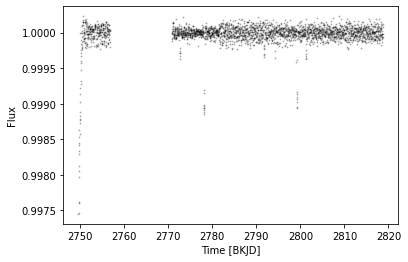
Looks like there’s something wrong at the begginning of our data. For now, lets mask it out.¶
[11]:
debut_mask = np.array(lc_targ.ts_clean.time.value < 2752.5)
Look for transits using TLS¶
Look for the first exoplanet¶
[12]:
perio_results1 = lc_targ.tls_periodogram(cleaned=True, n_transits_min=2, mask=debut_mask)
Transit Least Squares TLS 1.0.31 (22 Nov 2021)
Creating model cache for 44 durations
Searching 2342 data points, 6881 periods from 0.602 to 33.099 days
Using all 8 CPU threads
100%|██████████████████████████████████████████████████████████████████| 6881/6881 periods | 00:20<00:00
Searching for best T0 for period 21.06392 days
/home/jrodrigues/testenv/lib64/python3.9/site-packages/transitleastsquares-1.0.31-py3.9.egg/transitleastsquares/main.py:411: UserWarning: 1 of 3 transits without data. The true period may be twice the given period.
Plot the TLS periodogram¶
[13]:
fulmar.perioplot(perio_results1, lc_targ.K2, folder="K2-109/", pl_n=1, maxper=None, savefig=False)
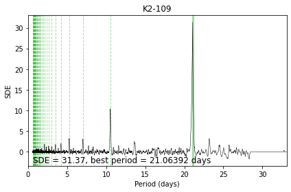
Plot the resulting model to have a quick visual check¶
[14]:
fulmar.modelplot(lc_targ.tls_results)
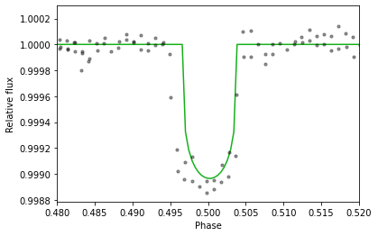
Optimize the transit parameters. Be careful it assumes circular orbit¶
[15]:
p, t0, dur, depth, ab, flat_samps = fulmar.params_optimizer(lc_targ.ts_clean, lc_targ.tls_results.period, lc_targ.tls_results.T0, 1-lc_targ.tls_results.depth, lc_targ.ab, lc_targ.R_star, lc_targ.K2, tran_window=0.25, ncores=None, mask=None)
running on 8 cores
mean -3.22
log_ror -3.22
log_period -0.92
t0 -0.92
log_dur -3.22
b_impact__ -1.39
obs 215.17
Name: Log-probability of test_point, dtype: float64
optimizing logp for variables: [log_dur, b, log_ror]
100.00% [34/34 00:00<00:00 logp = 3.298e+02]
message: Optimization terminated successfully.
logp: 202.27788474824652 -> 329.8381013996262
optimizing logp for variables: [mean]
100.00% [4/4 00:00<00:00 logp = 3.299e+02]
message: Optimization terminated successfully.
logp: 329.8381013996262 -> 329.9332573296841
optimizing logp for variables: [b, log_dur, t0, log_period, log_ror, mean]
100.00% [97/97 00:00<00:00 logp = 3.353e+02]
message: Desired error not necessarily achieved due to precision loss.
logp: 329.9332573296841 -> 335.29514335086077
optimizing logp for variables: [b, log_dur, t0, log_period, log_ror, mean]
100.00% [106/106 00:00<00:00 logp = 3.353e+02]
message: Desired error not necessarily achieved due to precision loss.
logp: 202.27788474824652 -> 335.2951433508669
Multiprocess sampling (2 chains in 8 jobs)
NUTS: [b, log_dur, t0, log_period, log_ror, mean]
100.00% [10000/10000 00:56<00:00 Sampling 2 chains, 0 divergences]
Sampling 2 chains for 2_500 tune and 2_500 draw iterations (5_000 + 5_000 draws total) took 58 seconds.
The number of effective samples is smaller than 25% for some parameters.
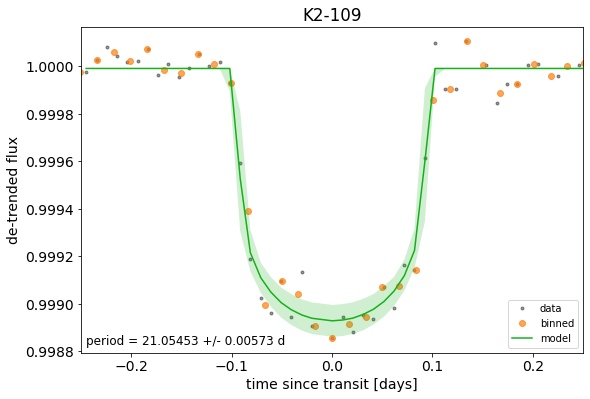
Mask intransit data¶
[18]:
intransit = transit_mask(lc_targ.ts_clean.time.value, p, 1.3*dur, t0) # True when datapoints are in transit
Combine intransit mask with the initial mask¶
[19]:
p1_mask = np.logical_or(debut_mask, intransit)
Plot the lightcurve with transits highlighted¶
[20]:
plt.plot(lc_targ.ts_clean.time.value, lc_targ.ts_clean['flux'],'k.', markersize=1.8, alpha = 0.25)
plt.plot(lc_targ.ts_clean.time.value[intransit], lc_targ.ts_clean['flux'][intransit],'o', color='xkcd:green', markersize=4.8, alpha = 0.5)
plt.xlabel('Time [{}]'.format(str(lc_targ.ts_stitch.time.format).upper()))
plt.ylabel('Flux')
#plt.xlim(2749,2752)
# plt.ylim(0.985,1.015)
plt.show()
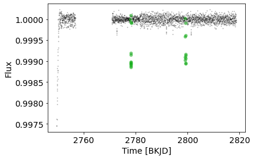
Look for the second exoplanet¶
[21]:
perio_results2 = lc_targ.tls_periodogram(cleaned=True, n_transits_min=2, period_min=0.9, mask=p1_mask)
Transit Least Squares TLS 1.0.31 (22 Nov 2021)
Creating model cache for 44 durations
Searching 2318 data points, 5707 periods from 0.9 to 33.099 days
Using all 8 CPU threads
100%|██████████████████████████████████████████████████████████████████| 5707/5707 periods | 00:17<00:00
Searching for best T0 for period 9.55586 days
Plot the TLS periodogram¶
[22]:
fulmar.perioplot(perio_results2, lc_targ.K2, folder="K2-109/", pl_n=2, maxper=None, savefig=False)
# perioplot(results, lc_targ.K2, folder="K2-109/", num=1, maxper=50, savefig=False)
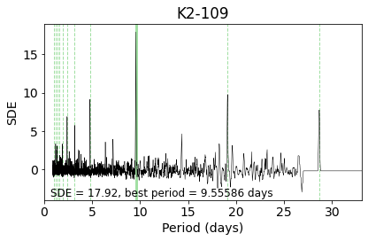
[23]:
fulmar.modelplot(lc_targ.tls_results)
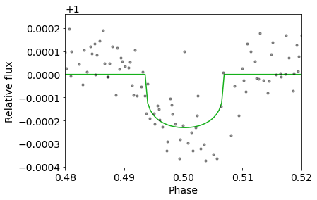
Visualize where the transits lay in the lightcurve¶
[24]:
plt.plot(lc_targ.ts_clean.time.value[~debut_mask], lc_targ.ts_clean['flux'][~debut_mask],'ko', markersize=1.8, alpha = 0.2)
plt.xlabel('Time [{}]'.format(str(lc_targ.ts_stitch.time.format).upper()))
plt.ylabel('Flux')
#plt.xlim(2749,2752)
# plt.ylim(0.985,1.015)
for n in perio_results1.transit_times:
plt.axvline(n, alpha=0.4, lw=2, ymax=0.15, color='xkcd:green')
for n in perio_results2.transit_times:
plt.axvline(n, alpha=0.3, lw=2, ymax=0.45, color='xkcd:orange')
plt.title(lc_targ.K2)
plt.ylim(0.9985,1.00028)
plt.show()
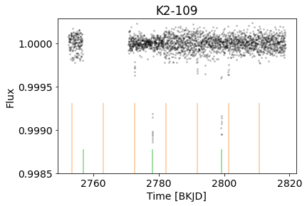
Optimize the transit parameters. Be careful it still assumes circular orbit¶
[25]:
p_1, t0_1, dur_1, depth_1, ab_1, flat_samps_1 = fulmar.params_optimizer(lc_targ.ts_clean, lc_targ.tls_results.period, lc_targ.tls_results.T0, 1-lc_targ.tls_results.depth, lc_targ.ab, lc_targ.R_star, lc_targ.K2, tran_window=0.25, ncores=None, mask=~p1_mask)
running on 8 cores
mean -3.22
log_ror -3.22
log_period -0.92
t0 -0.92
log_dur -3.22
b_impact__ -1.39
obs 951.62
Name: Log-probability of test_point, dtype: float64
optimizing logp for variables: [log_dur, b, log_ror]
100.00% [34/34 00:00<00:00 logp = 9.923e+02]
message: Optimization terminated successfully.
logp: 938.7314070773815 -> 992.3434057514368
optimizing logp for variables: [mean]
100.00% [4/4 00:00<00:00 logp = 9.979e+02]
message: Optimization terminated successfully.
logp: 992.3434057514368 -> 997.8685515283529
optimizing logp for variables: [b, log_dur, t0, log_period, log_ror, mean]
100.00% [118/118 00:00<00:00 logp = 1.006e+03]
message: Desired error not necessarily achieved due to precision loss.
logp: 997.8685515283529 -> 1005.5500559403897
optimizing logp for variables: [b, log_dur, t0, log_period, log_ror, mean]
100.00% [119/119 00:00<00:00 logp = 1.005e+03]
message: Desired error not necessarily achieved due to precision loss.
logp: 938.7314070773815 -> 1005.3873774223697
Multiprocess sampling (2 chains in 8 jobs)
NUTS: [b, log_dur, t0, log_period, log_ror, mean]
100.00% [10000/10000 01:24<00:00 Sampling 2 chains, 0 divergences]
Sampling 2 chains for 2_500 tune and 2_500 draw iterations (5_000 + 5_000 draws total) took 86 seconds.
The number of effective samples is smaller than 10% for some parameters.
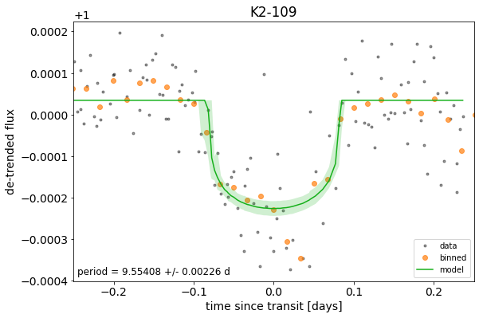
Mask intransit data¶
[26]:
intransit2 = transit_mask(lc_targ.ts_clean.time.value, p_1, 1.3*dur_1, t0_1) # True when datapoints are in transit
Combine intransit mask with the initial mask¶
[27]:
p2_mask = np.logical_or(p1_mask, intransit2)
Plot the lightcurve with transits highlighted¶
[28]:
plt.plot(lc_targ.ts_clean.time.value[~debut_mask], lc_targ.ts_clean['flux'][~debut_mask],'k.', markersize=1.8, alpha = 0.25)
plt.plot(lc_targ.ts_clean.time.value[intransit2], lc_targ.ts_clean['flux'][intransit2],'o', color='xkcd:orange', markersize=4.8, alpha = 0.25, label='K2-109b')
plt.plot(lc_targ.ts_clean.time.value[intransit], lc_targ.ts_clean['flux'][intransit],'o', color='xkcd:green', markersize=4.8, alpha = 0.25, label='K2-109c')
plt.xlabel('Time [{}]'.format(str(lc_targ.ts_stitch.time.format).upper()))
plt.ylabel('Flux')
#plt.xlim(2749,2752)
# plt.ylim(0.985,1.015)
plt.title(lc_targ.K2)
plt.legend()
plt.show()
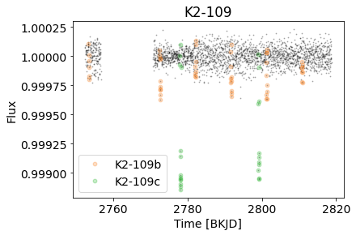
Look for a possible third exoplanet ?¶
[29]:
perio_results3 = lc_targ.tls_periodogram(cleaned=True, n_transits_min=2, mask=p2_mask)
Transit Least Squares TLS 1.0.31 (22 Nov 2021)
Creating model cache for 44 durations
Searching 2266 data points, 6881 periods from 0.602 to 33.099 days
Using all 8 CPU threads
100%|██████████████████████████████████████████████████████████████████| 6881/6881 periods | 00:15<00:00
Searching for best T0 for period 12.50044 days
/home/jrodrigues/testenv/lib64/python3.9/site-packages/transitleastsquares-1.0.31-py3.9.egg/transitleastsquares/stats.py:458: RuntimeWarning: divide by zero encountered in double_scalars
Plot the TLS periodogram¶
[30]:
fulmar.perioplot(perio_results3, lc_targ.K2, folder="K2-109/", pl_n=3, maxper=None, savefig=False)
# perioplot(results, lc_targ.K2, folder="K2-109/", num=1, maxper=50, savefig=False)
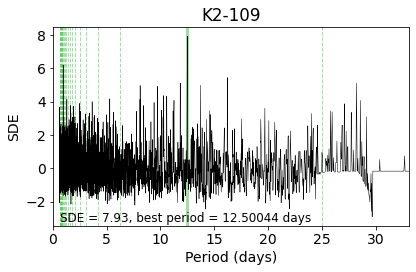
[31]:
fulmar.modelplot(lc_targ.tls_results)
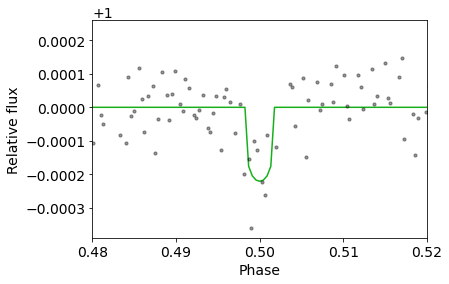
[32]:
perio_results3.SDE, perio_results3.FAP
[32]:
(7.933769512184782, 0.00160064)
SDE < 9, which is the normally accepted threshold for a detection. We can end it there, as we can assume the system only contains two planets.
[33]:
print("In the paper, K2-109b period is announced to be 9.55237 days, in our quick look we found it at {0:.5f}.\nRegarding K2-109c, the paper announces 21.05704 days, we found {1:.5f}. \nNot bad !".format(p_1, p))
In the paper, K2-109b period is announced to be 9.55237 days, in our quick look we found it at 9.55405.
Regarding K2-109c, the paper announces 21.05704 days, we found 21.05469.
Not bad !
Print version of Fulmar¶
[34]:
fulmar.utils.print_version()
Fulmar 0.1.8 (5 Apr 2022)